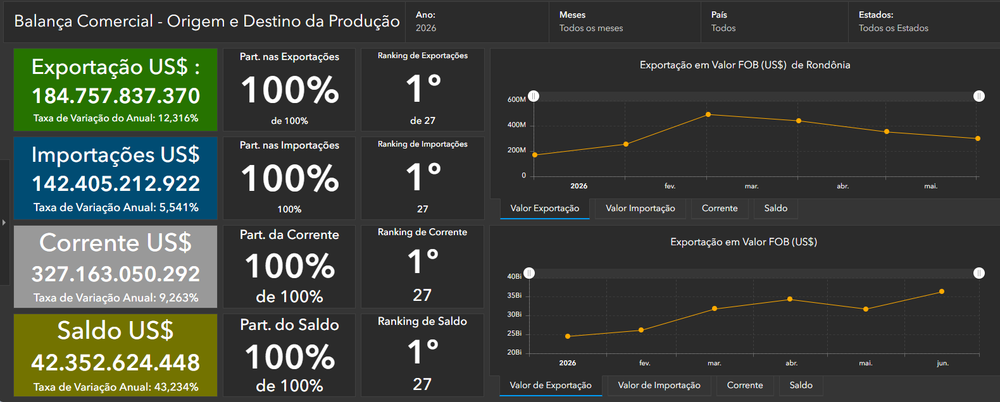

Dashboards analíticos e painéis interativos que transformam dados brutos em insights estratégicos para tomada de decisão baseada em evidências.
Dashboards Analíticos
Municípios Monitorados
Bases Integradas
A Inteligência de Negócios utiliza tecnologia, análise de dados e visualizações interativas para transformar informações complexas em conhecimento estratégico.
Por meio de dashboards e indicadores, gestores conseguem acompanhar resultados, identificar oportunidades e tomar decisões baseadas em evidências.

Integração de dados de diferentes fontes.
Organização e padronização das informações.
Criação de indicadores e relatórios inteligentes.
Apoio estratégico baseado em dados.
Informações rápidas para decisões estratégicas.
Dados confiáveis para planejamento.
Melhoria dos processos e resultados.